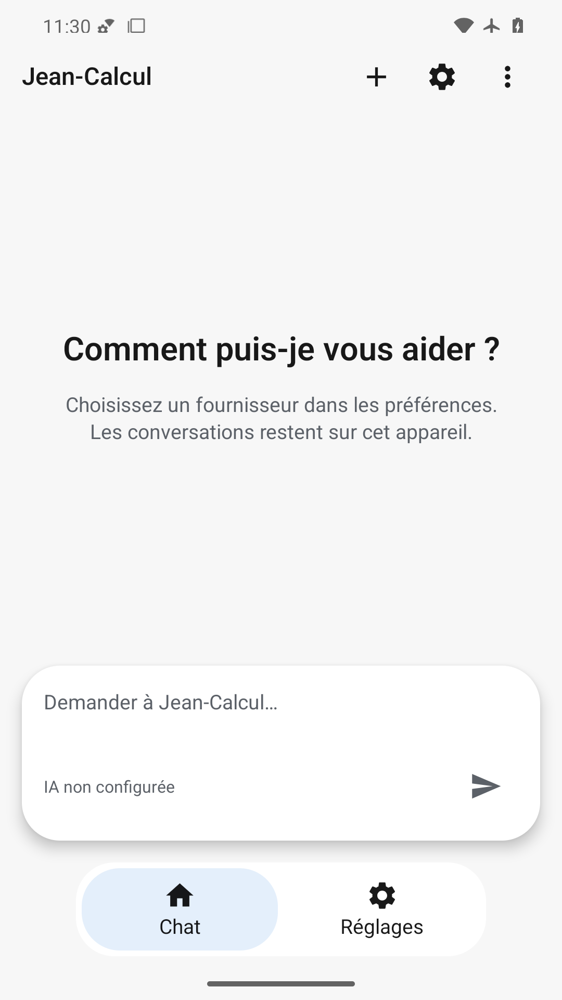
Titre, consigne de configuration et stockage local lisibles ; capsule et navigation restent dans les insets.
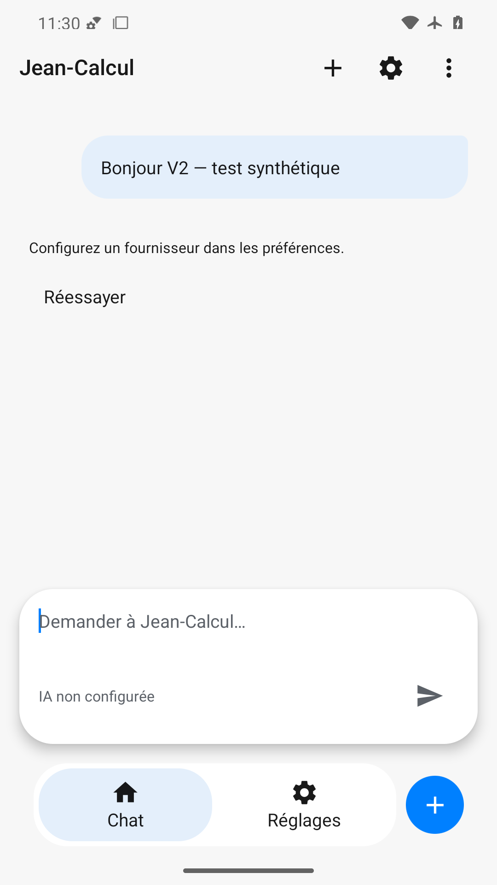
Bulle sortante synthétique, erreur de configuration réelle et action Réessayer lisibles. Aucune réponse IA inventée.
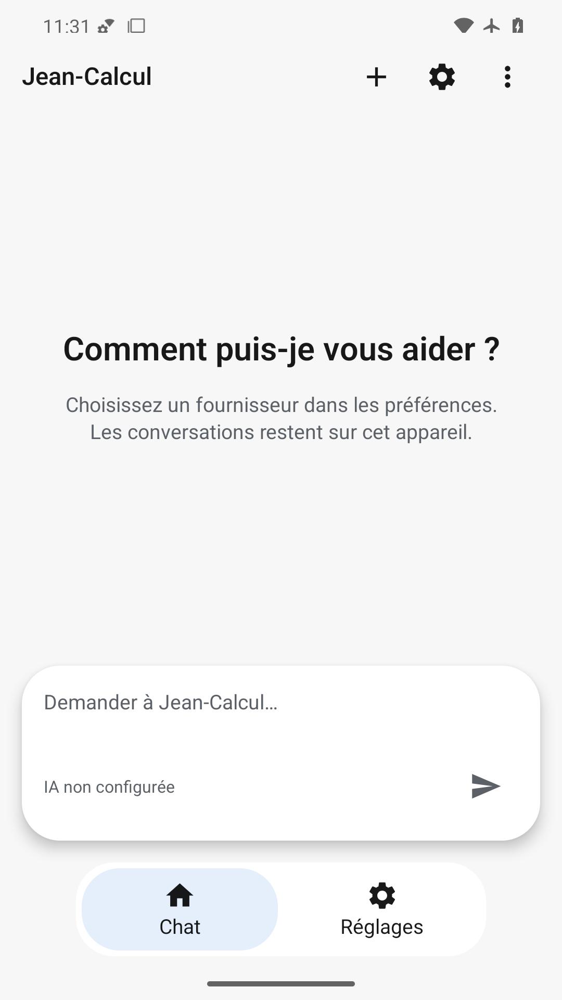
Accueil vide rétabli après effacement ; saisie et navigation visibles sans ancien message.
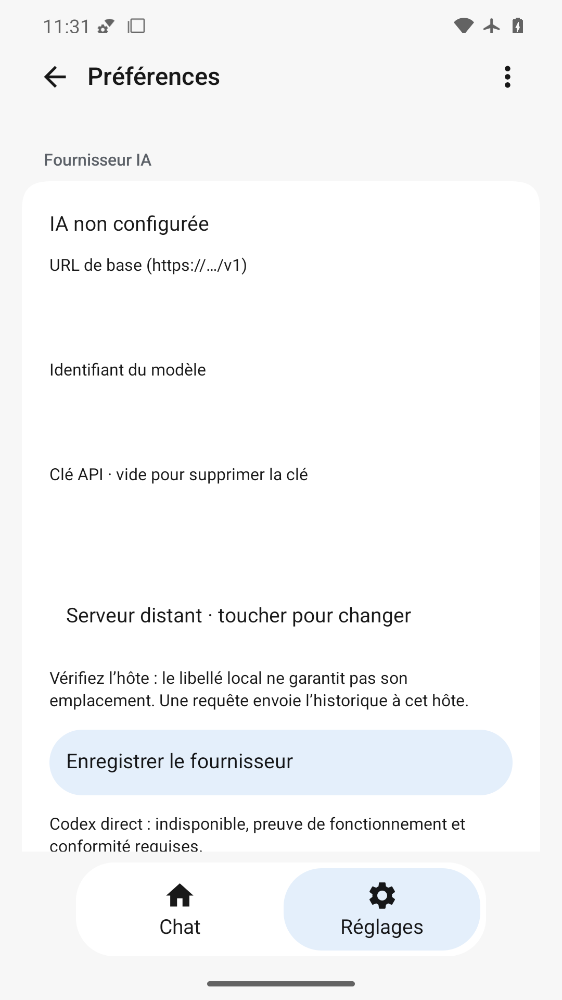
FAIL : les trois champs vides se fondent dans la carte blanche, sans contour ni repère de zone de saisie. Le formulaire monopolise les réglages.
Texte clair et secondaire lisibles sur fond sombre ; capsule et onglet actif identifiables.
360×640 dp : titre et description reviennent à la ligne ; saisie et navigation restent entièrement accessibles.
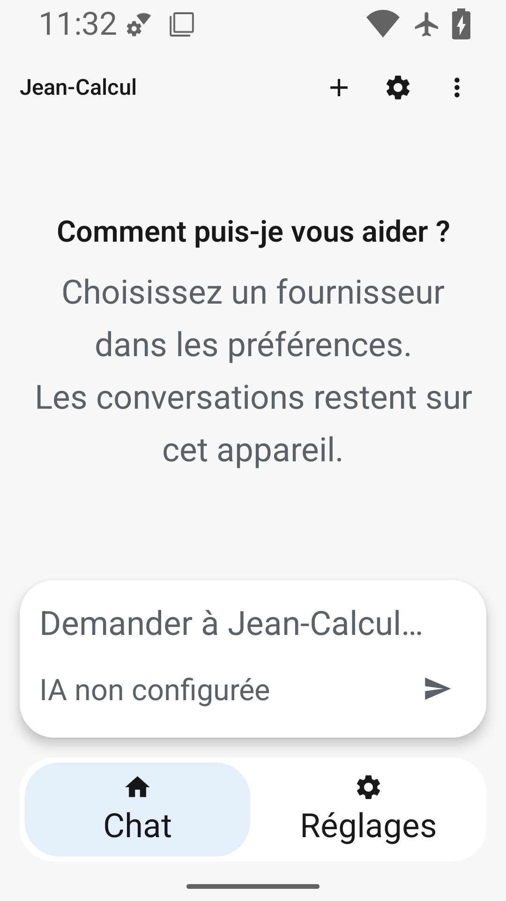
Police 200 % : corps et onglets agrandis sans chevauchement ; indication de saisie abrégée avec ellipse. Titre COUI fixe, limite alpha7.
Clavier visible, texte et envoi au-dessus de l’IME. En-tête Jean-Calcul et trois actions confirmés par ouverture native du recadrage inspection/keyboard-header.png ; aucune disparition.
État stable lisible avec échelle animation à zéro ; capture ne prouve pas la fluidité ni l’haptique.
Menu COUI ancré sous les options, deux entrées lisibles sans recouvrir la saisie.
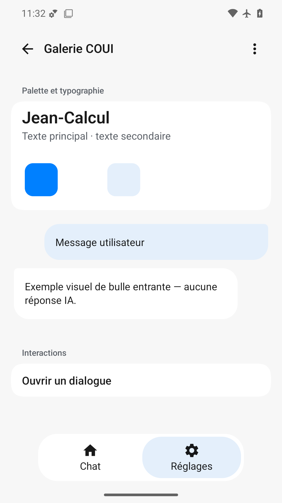
Palette et bulles illustratives clairement présentées ; bouton dialogue visible et navigation dégagée.
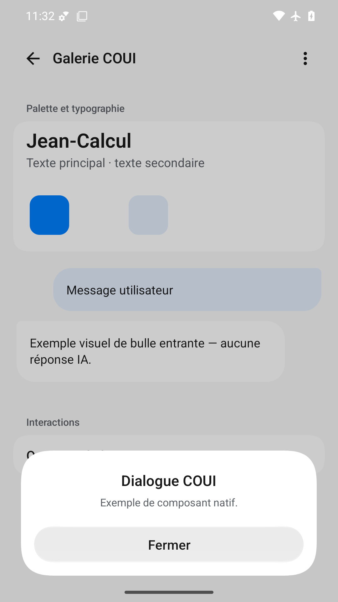
Dialogue COUI au-dessus du fond assombri ; titre, message et bouton Fermer lisibles dans les insets.
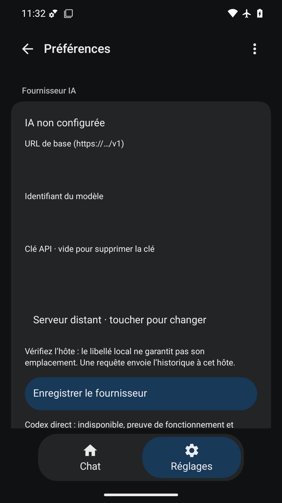
FAIL : champs vides sans contours sur fond de carte sombre, zones éditables peu identifiables. Bouton Enregistrer contrasté.
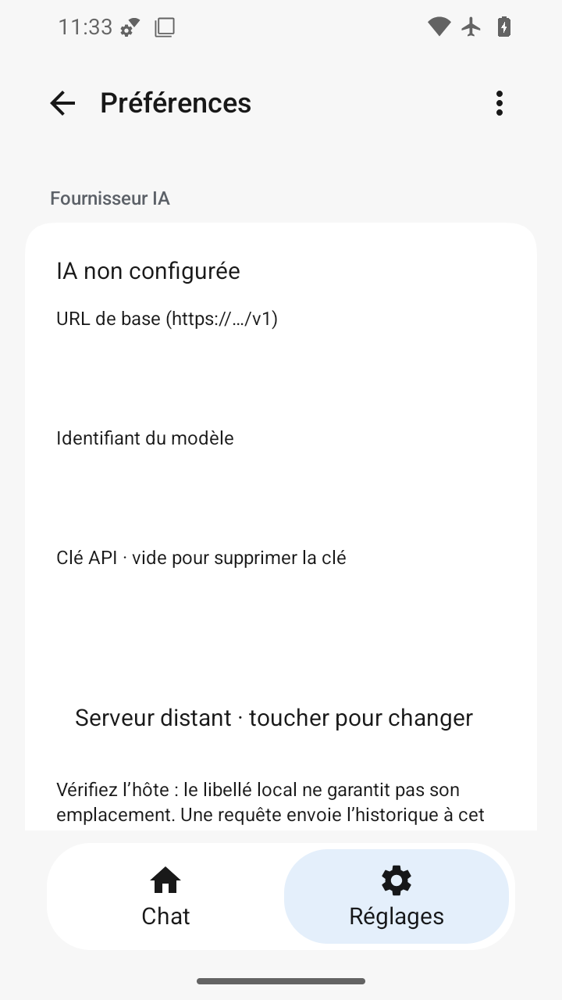
FAIL : les champs vides sans bordure sont indiscernables sur la carte. Formulaire défilable ; bouton Enregistrer plus bas, non inspecté dans cette capture.
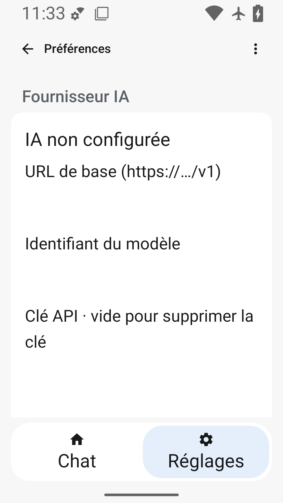
FAIL : champs vides sans délimitation ; texte agrandi lisible et non superposé, suite sous le pli défilable.
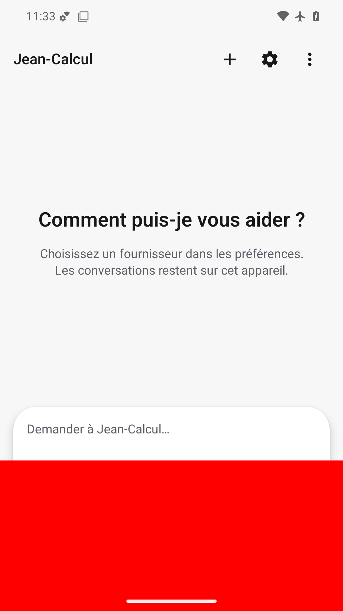
FAIL volontaire : grand rectangle rouge opaque au bas masque la majorité de la capsule, l’envoi et la navigation.